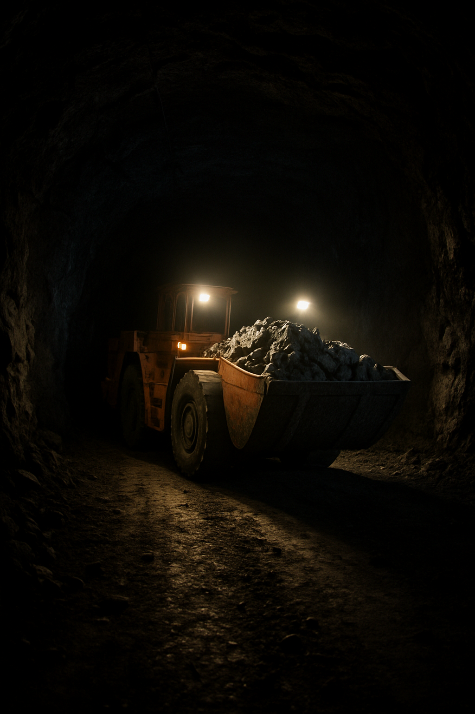
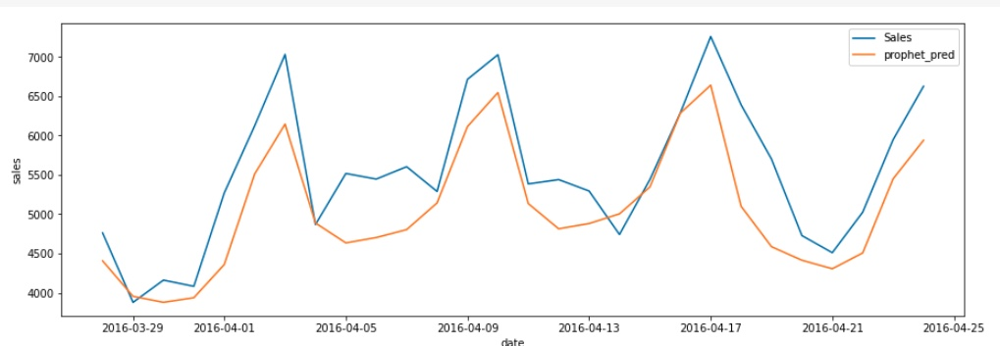
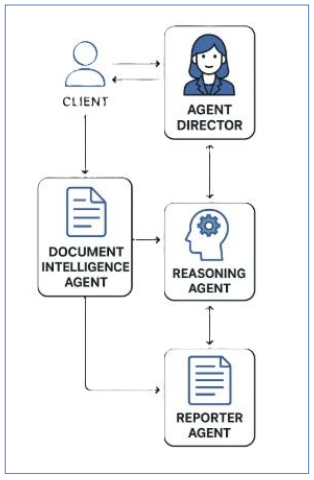

AI Minería
Optimiza tus proyectos y operaciones mineras con Inteligencia Artificial
Soluciones inteligentes para riesgos operacionales, planificación, mantenimiento y estructuras subterráneas.
1. AI para Operaciones Subterráneas

- Análisis estructural de galerías
- Absorción de energía en refuerzos
- Predicción de eventos sísmicos
- Simulación FEM de refuerzo ante cargas dinámicas
2. AI para Mantenimiento y Energía

- Mantenimiento predictivo con sensores y SCADA
- Patrones de consumo energético
- Optimización de operación de sistemas
3. AI para Proyectos y Gestión

- Asistente para planificación y adquisiciones
- Agentes inteligentes para tareas específicas
- Análisis de desempeño de contratistas
- Inteligencia documental para contratos
¿Por qué AI Minería?
- Especialización en minería subterránea
- Modelos explicables, sin cajas negras
- Pilotos listos en 30 días
- Integración con SAP, SCADA, P6
- Acompañamiento técnico desde el primer día